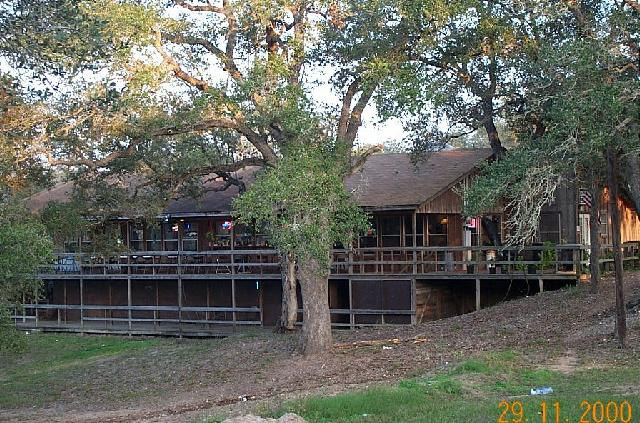
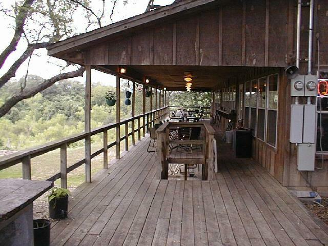
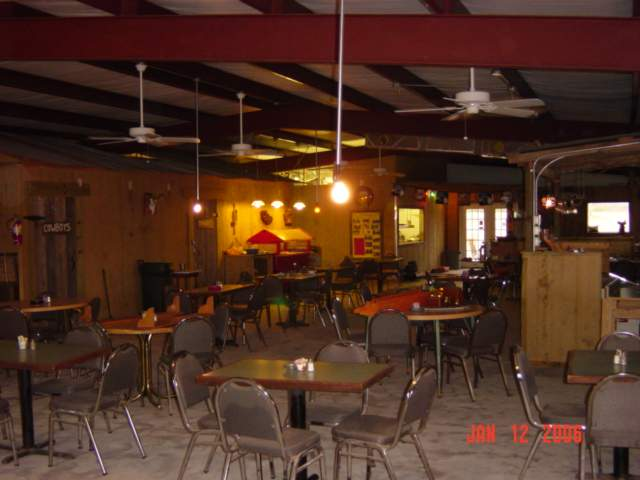

Goliad County, Texas
Colet Inn
A piece of Goliad County history.
A longtime restaurant, bar-and-grill, and entertainment gathering place in Goliad County.
Colet Inn is not currently operating. Future plans have not been decided.
Read our storyThe Colet Inn story
A place.
A history.
A story to tell.
Restaurant · Bar-and-grill · Entertainment
Part of Colet Inn's past.
Our Story
Before the fire.
After the rebuilding.
Colet Inn operated as a restaurant, bar-and-grill, and entertainment business. Its story includes the loss of the original business and the owner's work to build again.
The 2005 fire
A fire destroyed the business in 2005. The fire ended the original operation, but it was not the end of Colet Inn.
Building again
The owner rebuilt a larger building afterward. Dining and entertainment following the rebuilding took place inside. The planned outside area was never fully completed.
The story today
Colet Inn is owned by Robert "Robie" Lowery. It is not currently operating, and future plans have not been decided.
The Property
Part of the story
that remains.
The rebuilt property remains part of the Colet Inn story. The larger building was the setting for indoor dining and entertainment after the fire.
Its future direction has not been decided. This page records its place in Colet Inn's history.
More property information may be added here later.
Gallery
Colet Inn in photographs.
Archival views of the building, deck, and dining room. These photographs show Colet Inn's past, not the property's current condition.






Select a photograph to view the full-size image.
Inside the rebuilt Colet Inn
Filmed years after the 2005 fire. This archival video shows the rebuilt interior, not the original building or its current condition.
A silent, 42-second walkthrough of the bar counter, stools, wood-paneled walls, and dining area with checkered tablecloths and exposed ceiling beams. The camera passes wall decorations and windows before returning to the bar.
Open the video directly (MP4, 5.53 MB)From the music archive
Sunday music at Colet Inn
Alton Davis, performing as GoldRush, was part of Sunday music at Colet Inn. This archived Facebook video captures a performance at Colet Inn.
“GoldRush Live @ Colet Inn Bar and Grill” — posted by Robert Lowery Jr. on January 14, 2009. This is the upload date; the filming date has not been established.
Contact
Keep in touch.
Questions about Colet Inn or its history can be sent to:
coletinn@gmail.com